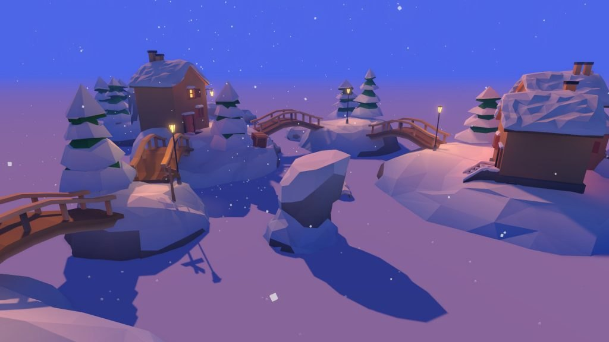
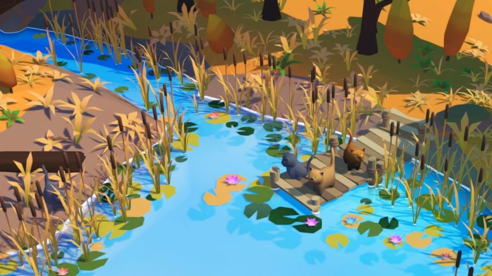
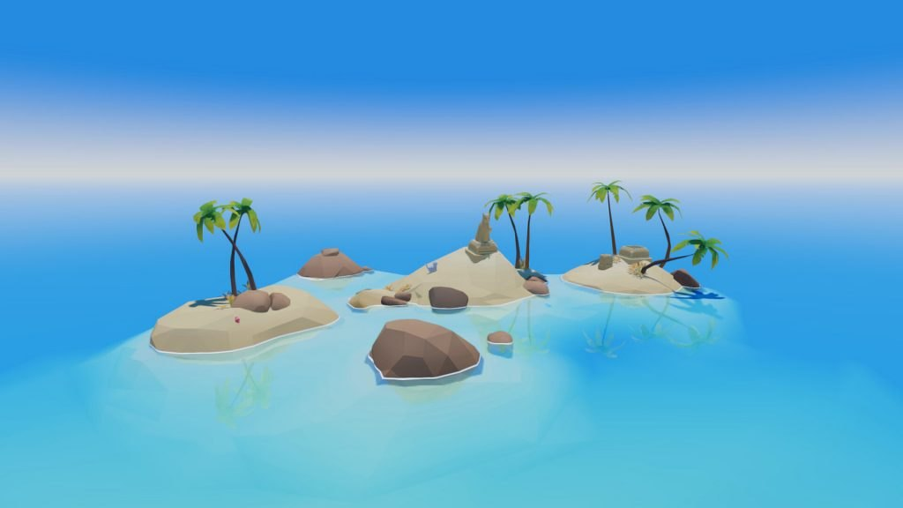

Summer Paws
I already wrote about two of the games my brother and I made. Our first game was Hidden Paws. We started making it exactly 3 years ago and then published it 3 months later.

After that, we made Hidden Paws Mystery, which is our worst game yet.
The third one in the series is Summer Paws, which is also about kittens but takes place during — this will surprise you — summer.

After the many failures of Hidden Paws Mystery we sort of knew what not to do:
- Don’t create too complicated graphics. Low poly art looks nice and pleasant, and there’s no reason to go for a realistic art style in a casual game about kittens.
- Don’t create a confusing game. There were graveyards and tentacles and cute cats in Hidden Paws Mystery! That’s a weird combination.
- Don’t make the levels too difficult. Again, it’s a game about kittens, so players don’t expect to have to look for a white cat in a mostly white level.
With that in mind, when we worked on Summer Paws, we made the game really pretty. It’s easier to market a game on Twitter when screenshots look nice.

Cats are hidden well, but not in a mean way. All the islands are places that you would want to visit.
If you like it you can get it on Steam 🙂